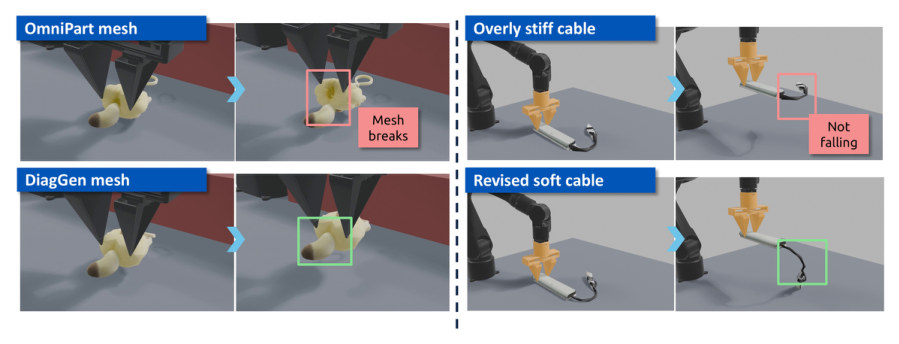
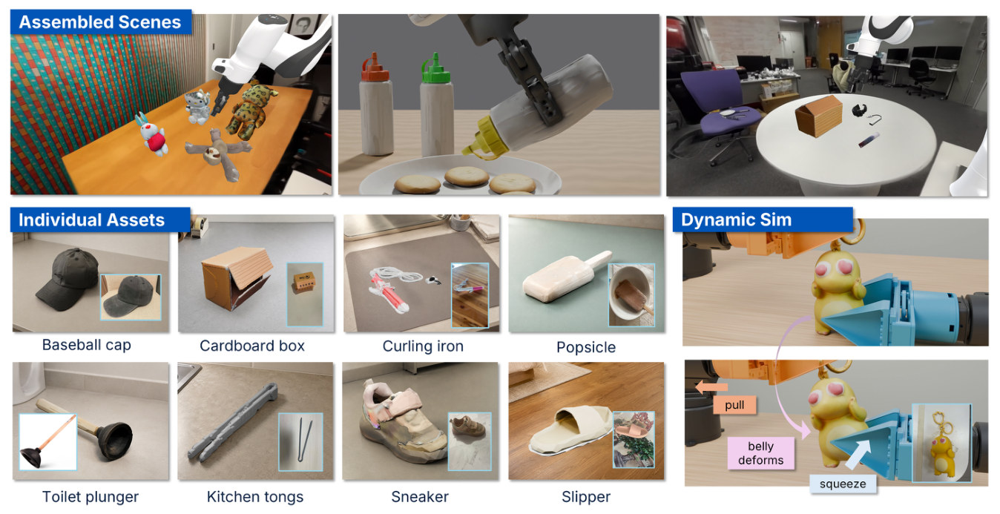
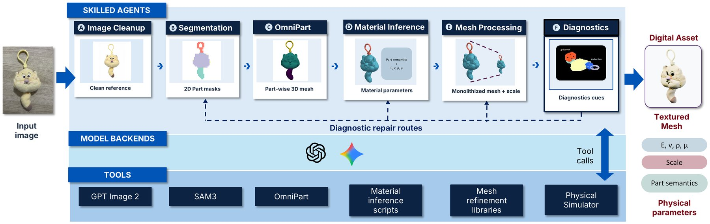
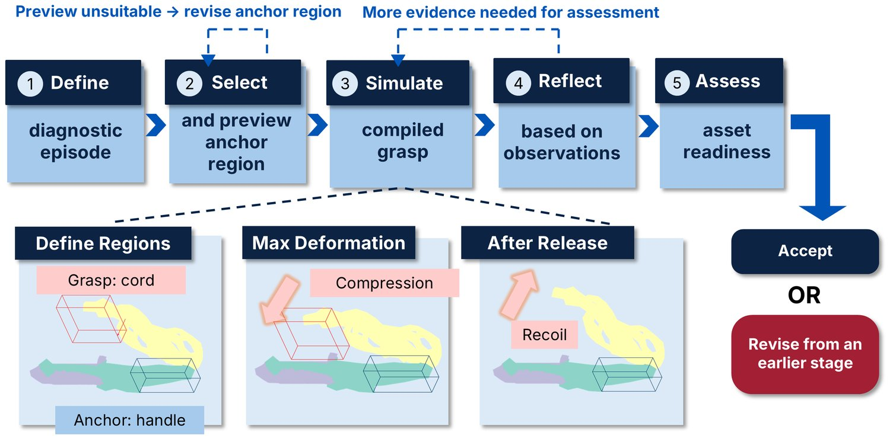
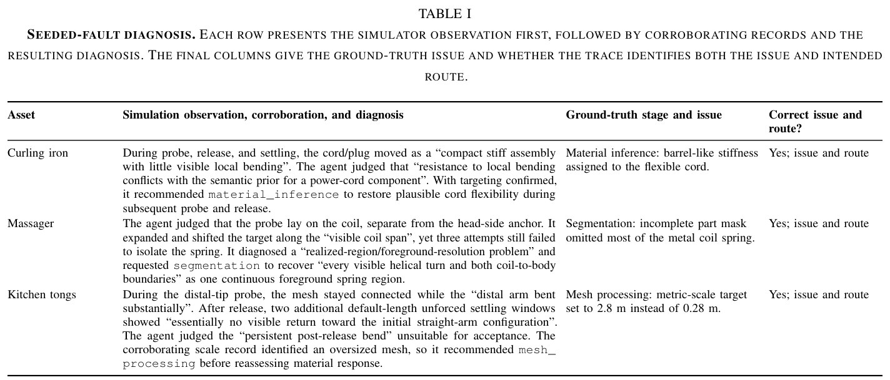
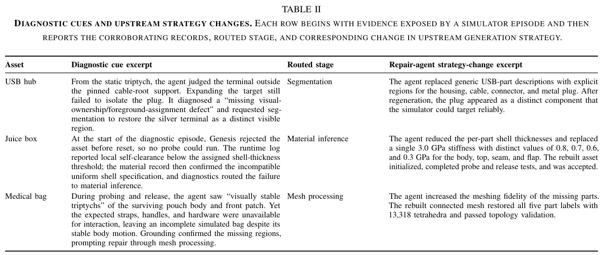
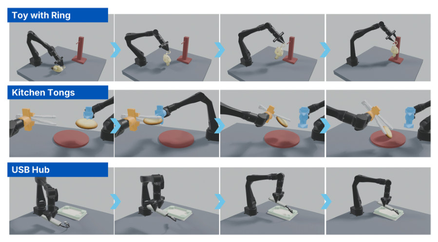
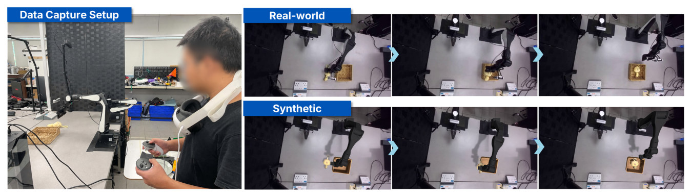

Agent-centric-real-to-sim · 归档于 2026-11-16
DiagGen
DiagGen: Agentic Generation of Deformable Assets with Sim-based Diagnostics for Robotic Simulation
归档到 Agent-centric real-to-sim：VLM agent 把一张真实照片变成可仿真的可变形 asset，在仿真里 probe、定位故障、送回上游返工；产出的 asset 已接进同一第一作者的 Agentic Real2Sim。
TL;DR
- Problem
- 照片生成的软物体 asset 看着对，一抓就露馅：线缆僵着不下垂、零件一抬就散。现有流程生成完才测，测到的响应不拿回去修上游。
- Idea
- 把 physics simulator 放进生成环：diagnostic agent 选一个部位，抓住、位移、放开，看形变和回弹，把故障归到 segmentation、material inference、mesh processing 之一，从那一步起重做。
- Result
- 40 个 asset 里 14 个被送去返工：PMSC 均值 2.14 → 3.43（5 分制，+1.29），10 升 4 平 0 降；PAIP 成对重放 9 胜 4 负 1 平。分数都来自 VLM 评审，没有真实材料测量。
Problem
软物体 asset 看着对不算数：一抓就露馅，而且没人告诉上游错在哪一步
Running example · 后面每个 stage 都跟着它走
USB hub：一张 USB hub 的照片（外壳 + 一截线缆 + 金属插头；Table II、Fig. 4、Fig. 5 都用它）→ 想要：一个能直接装进 Genesis 的可变形 asset，外壳硬、线缆软；机械臂抓住外壳抬起时，线缆在重力下弯下去，插头自然垂着。
flowchart LR IN["例子输入
一张 USB hub 照片"]:::example IN --> A1["OmniPart 直出
part mesh 直接四面体化"] A1 --> AX["part 之间没连上
一抬就散（Fig. 5 左）"]:::gap IN --> B1["开环生成
首版直接导出，不诊断"] B1 --> BX["线缆没被单独分出
线缆僵着不下垂
返工前 PMSC 2.14"]:::gap IN --> C1["真实交互 / 扫描重建
PhysTwin、EMPM、Sim1"] C1 --> CX["要标定交互或高精度扫描
一张照片起不了步"]:::gap
第 1 条的“散开”是论文在 toy-with-ring（Cheetah）上演示的（Fig. 5 左），USB hub 上没跑。第 2 条是 USB hub 自己的返工前版本（Fig. 5 右、Table II）；2.14 是被送去返工的 14 个 asset 返工前的 PMSC 均值（§IV-B），论文没给 USB hub 单独的分数，也没说它在不在这 14 个里。第 3 条是 §I、§II-B 的说法，论文没有实际跑这些方法；PhysX-Omni 那种“生成后才测”也没跑，见下面的 Related work。

怎么读这张图
- 左上 OmniPart mesh · 红框 Mesh breaks：各 part 之间没有弹性连接（论文叫 elastic load path），一抬就分家。左下 DiagGen mesh：连成一个整体后，绿框里还是一只完整的玩具。
- 右上 Overly stiff cable · 红框 Not falling：running example 的返工前版本：外壳抬起来了，线缆还保持原来的弯。右下 Revised soft cable：返工后线缆垂下去，绿框里插头挂着。
根本问题：物理对不对，要在仿真里动一下才看得出来；现有流程把这个响应留在生成之后，不拿来修上游。 这篇的切入点：把 simulator 放进生成环，让 diagnostic agent 主动 probe，再把证据送回负责的那个 stage 重做。
Related work
| 相关工作 | 解决什么 | 怎么解决 | 和本文的区别 |
|---|---|---|---|
| 同一问题 · 别的解法 | |||
| 视觉生成模型直出 OmniPart、SAM 3D | 一张图 → 3D mesh（OmniPart 分 part） | 生成模型一次出几何，不带材料 | 不一定能仿真：part 不连通、没有材料 → 本文把 OmniPart 当工具，再配 part-wise 材料并 monolithize（Fig. 5 左） |
| Sim-ready 物理 3D 生成 PhysX-Omni、PhysForge、SOPHY | 生成带物理属性的 asset（PhysX-Omni 含可变形） | 模型按 part 预测材料；PhysX-Omni 生成后再测，VLM 按规则打分 | 测试在生成之后、只打分 → 本文在环里 probe，并把故障送回出错的那个 stage |
| 从真实交互或扫描重建 PhysTwin、EMPM、PokeFlex、Sim1 | 把某个真实软物体变成可仿真的 twin | 录交互拟合 mass-spring 或可微 MPM；或高精度扫描 | 要标定采集和逐物体优化，参数不看 part 语义 → 本文只要一张未标定照片，按 part 给材料 |
| 相似做法 · 别的问题 | |||
| Object-level agentic 生成（本文所属的一族） Articraft、ArtGS | 生成单个刚体或铰接 asset | agent 调 CAD 工具或 foundation model，带 verifier 迭代 | 只做刚体 / 铰接，校验是 ad-hoc 的 → 本文做可变形，用 asset 自己的材料响应当诊断信号 |
| Scene-level agentic 生成 / 重建 SceneSmith、SceneWeaver、PhyScensis、GRS、Agentic Real2Sim | 整个场景的布局、视角、光照 | reason → act → observe → revise 的 agent 循环 | 管场景，不管单个软物体的材料 → 本文的 asset 可以放进去（Fig. 6 接的是 Agentic Real2Sim） |
来源：论文 §I、§II-A、§II-B 的分类和 §III、§IV-C 的对比，未另行检索。§II-C 的 VLM-as-a-judge（MT-Bench 的换位比较、Scenethesis 的成对判断）是评测方法，在 E2 讲。论文没有和表里任何一行做定量对比。
Level 1 · Big picture
一张照片进，一个在仿真里被抓过、验过的可变形 asset 出

怎么读这张图
- 左下 Individual Assets：每格大图是生成的带纹理 asset，角上的小图是输入的手机或网络照片。Curling iron 和 Kitchen tongs 在 E1 里被注入故障；Toilet plunger 和 Sneaker 出现在 E2 的成对比较里。
- 右下 Dynamic Sim：dragon toy 被 gripper 夹住，图上标了 pull、belly deforms、squeeze：asset 在仿真里真的会形变，不只是能渲染。
- 上排 Assembled Scenes：Gaussian 渲染的背景 + DiagGen 的可变形物体 + YCB 的 asset 拼成的场景。
- USB hub 不在这张图里：它出现在 Fig. 4、Fig. 5 和 Table II。
flowchart TD I["Input
一张 USB hub 照片"]:::example --> G["Generate：几何 + 材料 + mesh
初版：整件一种材料"] G --> D["Simulate + Diagnose：抓、位移、放开
想测插头，却选不出来"]:::win D -->|"repair cue：回 segmentation"| G D -->|"accept"| O["Export
线缆、外壳各有材料"]
Level 2 · Stages
Fig. 2 的 6 个 stage（A–F）+ 一条返工回路

符号表（Fig. 2 右下的 Physical parameters）
| 符号 | 白话 | 例子里 |
|---|---|---|
| E | Young's modulus，多硬：越大越难压弯 | USB hub 的值论文没给；juice box 返工后 body 0.8、top 0.7、seam 0.6、flap 0.3 GPa（Table II） |
| ν | Poisson's ratio，压扁时往两边鼓多少 | 未报告 |
| ρ | density，密度，决定有多重 | 未报告 |
| μ | 图里没写全称；对照正文的参数列表应是 friction（我的对应） | 未报告 |
| Scale | 物体的真实尺寸 | USB hub 未报告；kitchen tongs 的正确目标是 0.28 m（§IV-A） |
| Part semantics | 每个 part 是什么 | housing、cable、connector、metal plug（Table II） |
怎么读这张图
- 最左 Input image：一张照片（图里是带钥匙环的毛绒玩具）。例子里是 USB hub 的照片。
- 顶层 Skilled agents，A 到 F：每个 stage 一个 agent 做高层决定，卡片下面写着它的产物：Clean reference → 2D Part masks → Part-wise 3D mesh → Material parameters → Monolithized mesh + scale → Diagnostics cues。下面的 stage 1–6 和 A–F 一一对应。
- F 卡片里的小图：黑底上的 grasp box 和 anchor box，就是 Fig. 3 下排放大画的那两种框。
- 虚线 Diagnostic repair routes：从 F 往回指向 B、D、E，就是三条 repair route。USB hub 走的是回 B。
- 中层 Model backends：OpenAI 的 logo 和一个彩色四角星（我看着像 Gemini 的标志；正文只点名了 GPT 系列）。
- 底层 Tools：GPT Image 2、SAM3、OmniPart、material inference scripts、mesh refinement libraries、Physical Simulator。右边的双向箭头 Tool calls：agent 只做决定，动手的是工具。
- 最右 Digital Asset：Textured Mesh 加上符号表里的 Physical parameters。
flowchart TD S1["1 · Image cleanup
干净参考图 + 描述"] --> S2["2 · Segmentation
初版：插头没分出来"] S2 --> S3["3 · OmniPart
线缆不是单独 part"] S3 --> S4["4 · Material inference
整件一种材料"] S4 --> S5["5 · Mesh processing
定尺度，连成一体"] S5 --> S6["6 · Diagnostics
probe 选不中插头"]:::win S6 --> R["↺ Repair
回 2 · Segmentation"]:::win S6 --> X["Export
线缆、外壳各有材料"] R -.-> S2 R -.-> S4 R -.-> S5 click S1 href "#stage-1" click S2 href "#stage-2" click S3 href "#stage-3" click S4 href "#stage-4" click S5 href "#stage-5" click S6 href "#stage-6" click R href "#stage-all"
点击 stage 展开 Level 3 细节。虚线是三条 repair route，回到 2、4、5；返工怎么做见 ↺ Evidence-guided repair。
Level 3 · Details
每个 stage 的细节
Stage 1 · A Image cleanup 一张照片 → clean reference + 面向仿真的描述
- Why：后面要的是物体本身的静止形状和材料线索，不是原始照片里的背景和杂物。
- How：把输入照片变成干净的物体参考图（工具是 GPT Image 2，见 Fig. 2 底层）。
- How：同时写一段 simulation-oriented description，强调 rest shape 和 material cues。
- 论文只有一句话（§III-A），没有消融。
flowchart LR a["输入照片
USB hub"]:::example --> b["GPT Image 2
清出物体"] b --> c["Clean reference
+ 面向仿真的描述"]
Running example 在这一步
USB hub 照片 → 干净参考图 + 描述。论文没有展示 USB hub 这一步的产物；之后走 segmentation route 返工时，这一步的结果原样保留。
Stage 2 · B Segmentation clean reference + part 描述 → 2D part masks
- Why：软硬不同的部位要先分开，后面才能各给各的材料、各自被 probe。
- How：SAM3 把参考图分成 2D parts；agent 用 skill 描述物体由哪些部位组成，返工时改的就是这份 part 描述（Table II）。
- 会坏在哪：行为不同的区域被并成一块，或一个连续区域被切碎。这正是 segmentation route 要修的（§III-C）。
flowchart LR a["Part 描述
初版：泛泛的
USB 部件"]:::example --> b["SAM3
参考图 → 2D masks"] b --> c["2D part masks
插头不是
独立区域"]:::gap
Running example 在这一步
初版用的是泛泛的 USB 部件描述，金属插头没有成为独立的可见区域（Table II）。返工后描述换成 housing、cable、connector、metal plug 四个明确区域。
例子延伸 · massager（E1）：故意让 mask 只盖住金属弹簧的一小部分，下游就没法把弹簧表示成一个完整、能单独 probe 的 part。
Stage 3 · C OmniPart 2D masks + 描述 → 一组分开的 part-wise 3D mesh
- Why：后面按 part 给材料、按 part 做 probe，每个 part 都要有自己的 3D 几何。
- How：OmniPart（part-aware 3D 生成，SIGGRAPH Asia 2025）把 masks 和描述抬成一组互相分开、整体协调的 part mesh。
- 留下的问题：各 part 之间没有连接。直接四面体化放进 FEM，一受力就分家（Fig. 5 左），所以 Stage 5 要把它们连成一体。
flowchart LR a["2D masks + 描述
返工后 4 个区域"]:::example --> b["OmniPart
2D → 3D 分 part"] b --> c["Part-wise 3D mesh
各 part 互不相连"]
Running example 在这一步
初版 masks 没把线缆和插头分出来，所以线缆不是单独的可变形 part（§IV-C）。返工后重跑这一步，插头成为独立部件，仿真能稳定选中它（Table II）。
Stage 4 · D Material inference part mesh + part 语义 → 每个 part 的表示方式和力学参数
- Why：同一个物体里有软有硬（curling iron 的线和 barrel），整件一种材料就会错。
- How：VLM 按 part 的语义给参数，不做梯度拟合：material class、E、ν、ρ、friction、fill mode。
- How：还要定表示方式：surface 还是 volumetric。物理模型用 Genesis 的 linear elastic。
- 注意：参数是 VLM 的先验，没有拿真实物体测过。
flowchart LR a["Part mesh + 语义
housing、cable…"]:::example --> b["VLM 按 part 判断
材料类别、表示方式"] b --> c["每个 part 的参数
E、ν、ρ、friction"]
Running example 在这一步
初版：线缆没分出来，所以下游给整个 asset 只配了一种材料（§IV-C）。返工后线缆和外壳各有各的材料，具体数值论文没给。
例子延伸 · juice box（Table II）：Genesis 在 reset 之前就拒绝了这个 asset，日志说局部 self-clearance 小于 shell 厚度阈值。返工把各 part 的 shell 厚度调小，并把统一的 3.0 GPa 换成 body 0.8、top 0.7、seam 0.6、flap 0.3 GPa。
Stage 5 · E Mesh processing part meshes + 材料 → 定了尺度的单个 monolithic mesh（Genesis 可加载）
- Why：分开的 part mesh 之间没有弹性连接，进了 FEM 仿真一受力就分家（Fig. 5 左）。
- How：先定 metric scale。
- How：再把各 part mesh 合成一个 monolithic 的体网格，成为可加载的 Genesis asset。
- 评测时的成本线：PMSC 对超过 40,000 个四面体的 mesh 扣 1 分（§III-D）。
flowchart LR a["Part meshes
各自独立"] --> b["定 metric scale
tongs：0.28 m"] b --> c["Monolithize
一个四面体 mesh"]
Running example 在这一步
USB hub 的各 part 连成一个可变形整体，所以抬起外壳时线缆始终连着（Fig. 5 右）。它的尺度和四面体数论文没给。
例子延伸 · medical bag（Table II）：背带、提手、五金件在 mesh 里丢了。返工提高了这些 part 的 meshing fidelity，重建后 5 个 part label 全部恢复，共 13,318 个四面体，通过 topology validation。
Stage 6 · F Simulator-based diagnostics 候选 asset → probe 的证据 + 接受，或一条 repair route
- Why：一张渲染图看不出软硬；要施加一个受控的交互，看响应。论文把这个 agent 叫作 online critic。
- 选哪里测：最多 4 个 semantic anchor。每个是一处能暴露行为的部位（handle、rim、flap、corner、柔软的主体），附一条要检验的物理假设；再配一个 grasp box，指定 end effector 在哪里接触。
- 先预览：runtime 编译 grasp box 和 anchor box 并渲染预览；agent 看预览改 target，直到接触位置和运动方向表达了想做的测试。
- 怎么测：每个 anchor 开一个新的 episode：物体静止 → end effector 抓住 grasp region → 按规定位移 → 放开 → 静置。协议统一，不同 revision 的证据才可比。
- 看什么：top 和 oblique 视角的同步 RGB 三联图、part-grounding overlay、几何和动作 metadata、step summary、runtime log。证据不够时可以暂停、观察、再加 probe。
- 归因：geometry、scale、segmentation、representation、material response、discretization、episode setup 之一。
- 谁拍板：orchestrator agent 对照完整的 revision history，决定接受、启动 repair，或停止诊断。

怎么读这张图
- 上排 1 到 5：Define 定一个 diagnostic episode → Select 选并预览 anchor region → Simulate 执行编译好的 grasp → Reflect 根据观察反思 → Assess 判断 asset 能不能用。
- 两条虚线回路：Preview unsuitable → revise anchor region（预览不对就改位置）；More evidence needed for assessment（证据不够，在同一个 episode 里再测一次）。
- 下排 Define Regions：红框 Grasp: cord 是 end effector 要抓、要拉动的地方；蓝框 Anchor: handle 是 hold 住的部位（项目页视频的字幕是 “Hold the handle. Bend the cord.”）。
- 下排 Max Deformation、After Release：Compression 箭头是压到最大形变的那一刻，Recoil 箭头是放开后的回弹；agent 看的就是这两刻。
- 右侧 Accept OR Revise from an earlier stage：USB hub 走的是后者。
flowchart TD d1["1 Define：开一个 episode
要测金属插头"]:::example --> d2["2 Select：anchor + grasp box"] d2 --> pv["预览 / 静态三联图
插头在固定的
cable-root 之外"] pv -->|"不合适：改 target"| d2 pv --> d3["3 Simulate
抓 → 位移 → 放开 → 静置"] d3 --> d4["4 Reflect
三联图、overlay、日志"] d4 -->|"证据不够：再测"| d3 d4 --> d5["5 Assess：归因 + route"] pv -->|"改了仍选不中"| d5 d5 --> acc["Accept → export"]:::win d5 --> rep["Revise
回 segmentation"]:::example
Running example 在这一步
从静态三联图看，agent 判断金属端子落在被固定住的 cable-root support 之外；把 target 扩大，还是选不出插头。诊断：missing visual-ownership/foreground-assignment defect，建议回 segmentation，把银色端子恢复成独立的可见区域（Table II）。
这次的证据不是形变不对，而是想测的 part 根本选不中：论文把“无法 probe 到目标部件”也算作暴露缺陷的响应（§IV-A）。
All stages ↺ Evidence-guided repair + export 诊断归因 → 回到负责的 stage → 它和下游全部重跑 → 同一套 probe 再诊断 → 导出
- Why：在最终 mesh 上就地打补丁，改不掉上游的错（比如 part 没分对）。
- How：归因映射到三条 route 之一；该 stage 和它下游的每个 stage 都重跑，得到一个完整的新候选，而不是局部修补。
- How：新 revision 回到同一套 probe，可以逐个 anchor 和旧版本比。
- 例外：episode setup 的问题（target、动作没选好）留在 diagnostics 内部改，不动上游。
- 前提：每个 stage 读带版本的上游 artifact，输出校验过的 output pack。agent 用 skills 做决定（描述物体、给材料、定 anchor 和 grasp、观察和反思、指定 route）；low-level tools 强制 artifact contract，把这些决定落成 masks、mesh、simulator 配置和 probing 动作。
- 导出：接受后冻结 asset bundle（manifest、材料规格、诊断记录），记下从输入照片到 repair 决定、simulator 证据的整条 lineage。
- 实验里的限制：每次运行最多返工 1 次（§IV）。
flowchart TD D["诊断归因
USB hub：端子没有归属"]:::example --> R1["segmentation route
part 被合并或被切碎"] D --> R2["material-inference route
几何对，形变或静置不对"] D --> R3["mesh-processing route
尺度、拓扑、数值故障"] R1 --> N["新 revision：该 stage 起下游全部重跑"] R2 --> N R3 --> N N --> P["回到同一套 probe，再诊断"]:::win
| Route | 什么时候走 | 改什么 · 保留什么 | 注入的故障（Table I） | 实际的例子（Table II） |
|---|---|---|---|---|
| segmentation | 行为不同的区域被并成一块，或连续区域被切碎 | 改 part masks 和边界；保留 cleaned reference | massager：弹簧的 mask 只盖住一小部分 | USB hub：插头选不出 → 写明四个区域 |
| material inference | 几何没问题，但形变或静置不对 | 改 surface / volumetric 和每个 part 的力学参数；保留 reference、masks、OmniPart meshes | curling iron：线被赋了 barrel 的刚度 | juice box：Genesis 拒绝加载 → 减 shell 厚度，3.0 GPa 拆成 0.8 / 0.7 / 0.6 / 0.3 |
| mesh processing | 接触和形变暴露数值或结构故障 | 改 scale、topology、和表示有关的几何；另外保留已推断的表示和材料 | kitchen tongs：尺度 0.28 m 改成 2.8 m | medical bag：背带提手丢了 → 提高 meshing fidelity，5 个 part 全回来 |
Running example 在这一步
走 segmentation route：repair agent 把泛泛的 USB 部件描述换成 housing、cable、connector、metal plug 四个明确区域；cleaned reference 原样复用，之后的 OmniPart、material、mesh 全部重跑：插头成为独立部件，线缆有了和外壳不同的材料（Table II、§IV-C）。两个 revision 都留着，才有 Fig. 5 右和上面这对视频。
Recap：例子覆盖了论文的哪些 idea
| 论文里的 idea | 例子里在哪体现 |
|---|---|
| 一张照片 → part-aware 几何 | Stage 1–3：USB hub 照片 → housing、cable、connector、metal plug |
| VLM 按 part 给材料和表示方式 | Stage 4：线缆和外壳各有材料；例子延伸 juice box 的 0.8 / 0.7 / 0.6 / 0.3 GPa |
| 定 metric scale + monolithize | Stage 5：抬起外壳线缆不掉；Fig. 5 左的 OmniPart 对照（Cheetah toy） |
| simulator 放进生成环：anchor、grasp box、预览、统一协议 | Stage 6：要测插头；curling iron 视频演示同一协议 |
| “选不中目标部件”也是证据 | Stage 6：USB hub 扩大 target 仍选不出插头；E1 的 massager 也是这样 |
| 把故障归到拥有它的 stage，三条 route，orchestrator 拍板 | All stages：USB hub 走 segmentation；juice box 走 material inference、medical bag 走 mesh processing |
| 返工 = 该 stage 起下游全部重跑；versioned artifact | All stages：cleaned reference 被复用，两个 revision 都留着 |
| 注入故障检验诊断 | E1：curling iron、massager、kitchen tongs（例子延伸） |
| PMSC、PAIP 两个 VLM 评测 | E2：14 个返工 asset；USB hub 没有单独的分数 |
| 下游操作和 scene-level real2sim | E3：USB hub 的 pick-and-place（Fig. 4 第三行）；E4：Cheetah toy 接进 Agentic Real2Sim |
Results
诊断能把故障送回对的 stage，返工带来中等提升；下游操作只有定性演示
顺序同论文：E1 诊断准不准（RQ1）→ E2 返工有没有用（RQ2）→ E3 asset 能不能拿来操作 → E4 能不能放进 scene-level 的 twin。比的是 VLM 给的规格分和成对胜负；没有成功率、没有耗时，也没有和别的生成方法的定量对比。
E1agent 能只靠 probe 的响应找到出错的 stage 吗？§IV-A · Table I

- 说明什么
- 3 个注入的故障，3 个都同时说对了问题和 route。curling iron（线被赋了 barrel 的高刚度）→ material_inference；massager（mask 漏掉大部分金属弹簧，改了三次 target 仍选不中）→ segmentation；kitchen tongs（尺度 0.28 m 写成 2.8 m，放开后弯着回不去）→ mesh_processing。定性结果，每条 route 只有 1 例。
- 在故事里
- 撑起贡献 C1：诊断的依据是主动 probe 出来的响应，不是一张渲染图。
- 指标
- 一个 case 算对 = agent 既说出了 issue，又把候选送到了那个 stage。执行前先写好 ground-truth 记录（受影响的 part、issue、所属 stage）。
- 怎么评测
- 3 个 asset，各注入 1 个只属于一个 stage 的故障，从该 stage 起重跑下游。
- 诊断用 GPT-5.5（high reasoning effort）；agent 不知道有什么故障、来自哪一步。
- probe 和 frame 预算、输出 schema、重试策略固定；每个 episode 从 fresh reset 开始，先录一段被动基线。
- 没有 baseline；论文没说重复了几次，也没有“无故障”的对照来看误报。
E2把诊断送回上游，重做出来的 asset 更好吗？§IV-B · 正文数字 + Table II
| 哪些 asset | 数量 | PMSC 均值（1–5） | 逐个比较 |
|---|---|---|---|
| 被建议返工 · 返工前 | 14 | 2.14 | PMSC：10 升（71.4%）· 4 平（28.6%）· 0 降 PAIP：返工后 9 胜 · 返工前 4 胜 · 1 平 |
| 被建议返工 · 返工后 | 14 | 3.43（+1.29） | |
| 第一次就被接受，没返工 | 26 | 3.12 | — |
这些数字只在 §IV-B 正文里，论文没有对应的表，这里按正文整理；项目页给的是同一组数字（+1.29、2.14 → 3.43、10 / 4 / 0）。

符号表（PMSC 的公式 S = max(1, H − F − 1[T > 40,000])）
| 符号 | 白话 | 例子里 |
|---|---|---|
| H | 第一个 VLM evaluator 给的整体分，1 到 5：5 = 各静态维度都站得住，1 = 表示或物理规格有根本矛盾 | USB hub 的单项分数论文没给；只有 14 个返工 asset 的均值 2.14 → 3.43 |
| F | 第二个 evaluator 的标记：有动摇整体的重大问题记 1，否则 0 | |
| T | 最终 mesh 的四面体数；超过 40,000 再扣 1（论文说这条计算预算线是经验值） | |
| S | 最终分数，最低 1 |
- 说明什么
- 返工后规格分更高、没有变差的，但提升是中等的；动态对比里 14 个有 4 个反而是返工前更好。PMSC 均值 2.14 → 3.43，+1.29 分（5 分制），10 升（71.4%）、4 平（28.6%）、0 降；PAIP 返工后 9 胜、返工前 4 胜、1 平（9/14）。论文自己的措辞是 moderate gain。胜的例子：cookie、okra、sneaker 返工后能 probe 到原来够不着的边缘、尖端、窄边；hand brush 小胜；toilet plunger 橡胶杯更软，但回弹不如返工前干净。负的例子：plush kitten、sport watch 返工前的选区和响应更好。
- 在故事里
- 撑起贡献 C2：repair cue 确实改了上游的生成策略（Table II），并带来可测的改善。
- 指标
- PMSC（静态）：两个 VLM evaluator 对照输入照片和常见材料先验，检查分割、part 几何、rest pose、part 语义、材料类别、E、ν、ρ、friction、fill mode、尺度；公式见上表。
- PAIP（动态）：从返工前版本的诊断证据里冻结一个 probe（target part、anchor、动作），在两个版本上用相同的 simulator、controller、camera 重放，各自在自己的 part 上定位；2 个 VLM judge × 2 种呈现顺序。judge 看三件事：目标 part 响应对不对、被抓的 anchor 是否还连着、整体是否真实；四个判断怎么合成胜 / 负 / 平，论文没给规则。
- 怎么评测
- 40 个物体：手机实拍和已有数据集（MVImgNet2.0）里的图。返工前后两版用同一张图、同样的上游文件、VLM 设置、simulator 和评测规则；每次运行最多返工 1 次。
- 生成和诊断用 GPT-5.6 Luna（Max reasoning）；PAIP judge 换成 GPT-5.6 Terra（Max reasoning），为的是减少对 Luna 产物的偏好。PMSC 两个 evaluator 用什么模型，论文没写明。
- PMSC 是事后把 rubric 套到已有的独立 review 上；evaluator 看不到诊断记录、revision 状态、配对候选和对方的判断。
- 没有人工评测，没有真实材料测量：论文说没有公开数据集提供对照真实测量的 part-wise 材料标签。
- 我的观察：被挑去返工的 14 个返工前均分 2.14，低于直接通过的 26 个（3.12），说明诊断挑出的确实是偏差的那批；返工后的 3.43 反超了它们。
E3生成的 asset 能直接拿来做接触丰富的操作吗？§IV-C · Fig. 4、Fig. 5

- 说明什么
- 能装进 Genesis 并做完 pick-and-place，但只有画面。toy with keyring 和 kitchen tongs 一次生成就能用，USB hub 用的是 segmentation 返工后的版本。两个对照都在 Fig. 5：OmniPart 直接四面体化的 toy mesh 一抬就散，DiagGen 的保持一体；USB hub 返工前线缆僵着，返工后下垂（返工那一节的视频）。
- 在故事里
- 撑起贡献 C3 的前半：visual foundation model 直出的 asset 不一定能仿真，DiagGen 的可以直接用；返工后的 asset 动起来更真实。
- 指标
- 没有量化指标。轨迹优化的停止条件是 gripper 抓牢并拿住 asset，由 agent 看渲染结果判断。
- 怎么评测
- Genesis 的 implicit FEM solver，gripper 和软物体之间用 SAP 做摩擦接触。
- 轨迹由 GPT-5.6 Sol agent（extra-high reasoning）在 task space 里迭代：提动作序列 → 仿真 → 看图 → 改 gripper pose 和 aperture；先抓牢，再优化搬运和放置。
- 3 个 asset，各 1 条轨迹；没有成功率、重复次数或真机执行。
E4能放进 scene-level real2sim 的 twin 里吗？§IV-C · Fig. 6

- 说明什么
- 能替换进 Agentic Real2Sim 重放一段真机 episode，同样只有画面。把原来 SAM3D 生成的 asset 换成 DiagGen 的 Cheetah toy，把 MuJoCo 换成更适合可变形仿真的 Genesis；论文说能 faithfully reconstruct the episode，没有给误差。
- 在故事里
- 撑起贡献 C3 的后半：DiagGen 的 asset 可以放进由真实场景转成的合成场景。
- 指标
- 无。只有 real 和 synthetic 的画面并排。
- 怎么评测
- 论文正文：1 段 pick-and-place episode，1 个 asset。
- 项目页多了两组真机 / 仿真对比视频（Dino twisting、Bottle pick and tilt），论文里没有，也没有数字。
Limits
局限和开放问题
- 论文承认：material inference 和 segmentation 的故障症状相似，diagnostic agent 可能分不清 root cause。
- 论文承认：大规模并行的数据生成还没测过。articulated asset、asset 多样性和物理保真度对 policy 训练的影响都留作 future work。
- 没有 ground truth：所有分数来自 VLM 评审；材料参数是 VLM 按 part 语义给的先验，没有和真实物体的测量对过。
- 返工不保证变好：PAIP 里 4/14 返工前更好；每次运行只允许返工 1 次，多轮会不会收敛没有数据。
- 下游证据是定性的：pick-and-place、OmniPart 对比、real2sim 重放都没有成功率或误差；token 和时间成本未报告。
For Agent-centric real-to-sim
对我们有什么用
- r2s-lite 的验收：锅盖那集第 9 次过了宽松规则，但锅被当成 receiver、锅盖开局在锅旁边（Real2Sim 全景）。DiagGen 先定 anchor（hold 住的锅）和 grasp box（要拿的锅盖）再预览；“目标不在该在的位置、选不中”本身就算证据，可能在跑成功规则之前就拦下这类错（我的推断）。
- r2s-lite 的 repair loop：把故障归到拥有它的 stage，从那一步起下游全部重跑，不在最终场景上打补丁；每次返工后冻结同一个 probe 在新旧 twin 上重放、配对比较（PAIP），而不是只看最后一次过没过规则。前提是每一步的产物都有版本。
- 软物体和 Genesis：我们的 baseline 之一 Agentic Real2Sim 已经被它接过一次（SAM3D asset 换成 DiagGen 的，MuJoCo 换成 Genesis）；WorldClaw 也在 Genesis 上，可以直接试它的 asset。r2s-lite 在 Isaac Sim 上，要用就得换 deformable 后端（推断）。材料仍是 VLM 猜的，和全景页“质量和摩擦暂时量不出来”的结论一致。